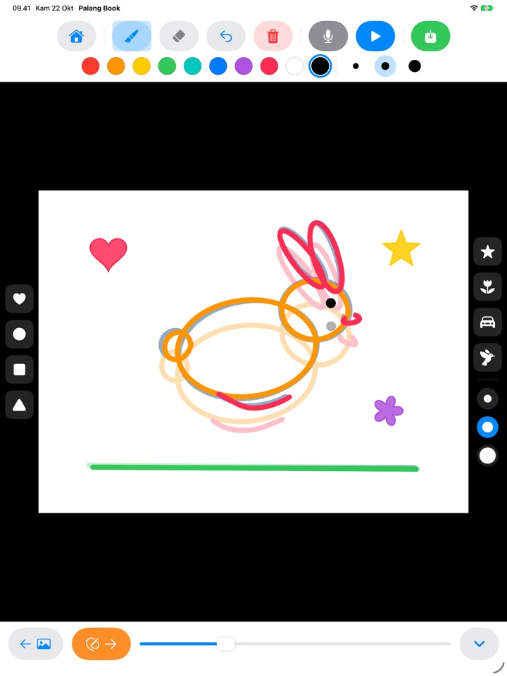
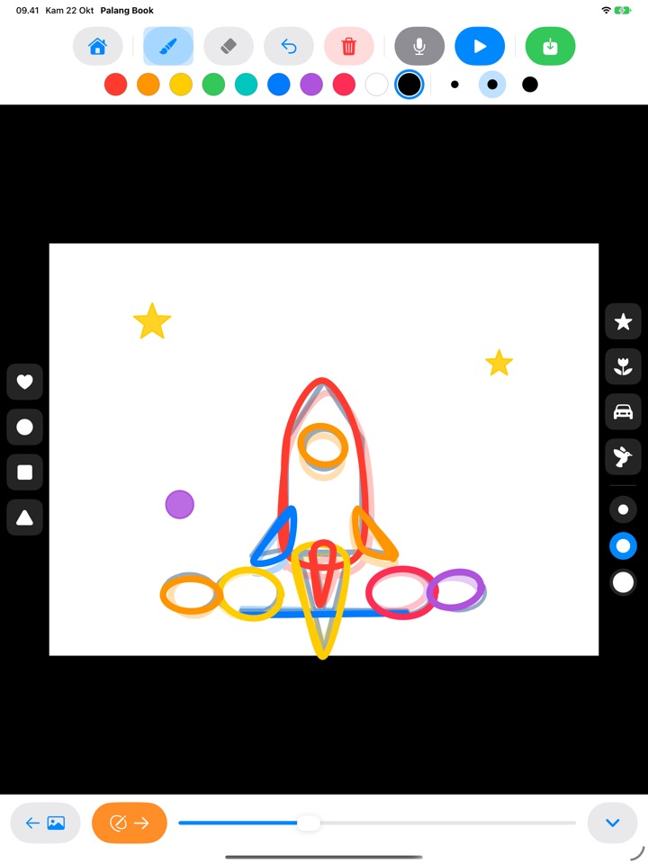
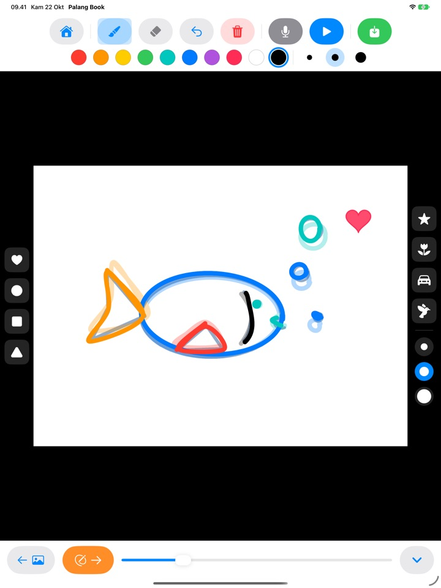
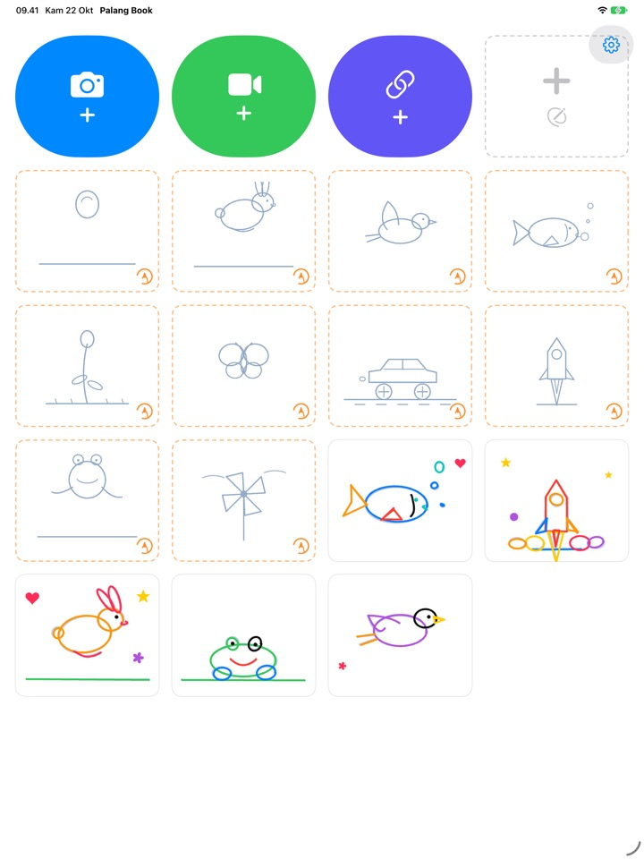

Jiplak garisnya,
lihat gambarnya hidup
Si kecil menjiplak garis panduan tipis halaman demi halaman. Tekan putar, garis panduan menghilang, dan hanya goresannya sendiri yang bergerak. Semua tombol berupa gambar, jadi anak yang belum bisa membaca pun bisa bermain sendiri.
Untuk iPad. 3 set jiplakan bisa dipakai gratis.

Coba gambar beberapa halaman
Gambar sesuatu, lalu ketuk panah oranye untuk pindah ke halaman berikutnya. Halaman sebelumnya tampak samar di bawahnya. Setelah dua atau tiga halaman, ketuk tombol putar biru.
Sayang, kan, kalau gambar sebagus itu cuma diam?
Membuat animasi berarti menggambar hal yang hampir sama berulang kali dengan sedikit perubahan, dan anak sendirian tidak tahu harus mulai dari mana. Palang Book menyediakan garis panduan tipis yang sudah berisi gerakannya, jadi anak cukup mengikuti garis. Begitu tombol putar ditekan, gambarnya bergerak.
Ikuti garisnya, jadilah animasi
Bola yang memantul, kelinci yang melompat, burung yang terbang, ikan yang berenang, bunga yang mekar, kupu-kupu, mobil balap, roket, katak, dan kincir angin. Setiap set berisi sekitar 20 halaman garis panduan.
Halaman sebelumnya tampak samar sehingga halaman berikutnya mudah digambar, dan saat diputar garis panduan menghilang sehingga hanya gambar si kecil yang bergerak.

Stempel dan sepuluh warna
Ketuk untuk menempelkan stempel hati, lingkaran, persegi, segitiga, bintang, bunga, mobil, dan burung. Stempel dan kuas masing-masing punya tiga ukuran, dengan sepuluh warna untuk dipilih.
Ada penghapus dan urungkan, jadi kesalahan mudah diperbaiki. Menggambar bisa dengan jari atau Apple Pencil.

Di atas video sendiri, atau di kertas kosong
Masukkan video yang Anda rekam sendiri atau video dari app Foto, lalu jiplak di atasnya. Sembunyikan latarnya, dan hanya adegan yang digambar yang diputar berurutan di atas kertas putih. Ada juga flipbook kosong tanpa garis panduan sama sekali.
Ketuk mikrofon untuk ikut merekam suara si kecil, lalu simpan karyanya sebagai video di app Foto untuk dibagikan ke keluarga.

Mulai dalam tiga langkah
- 1
Ketuk kartu panduan
Kartu bertepi putus-putus oranye di layar utama adalah set jiplakan.
- 2
Gambar, lalu balik halaman
Panah oranye membawa Anda ke halaman berikutnya.
- 3
Ketuk putar
Ketuk tombol putar biru, dan gambarnya bergerak.
Fungsi tiap tombol
- Kartu putus-putus oranye
- Mulai menjiplak
- Kartu putus-putus abu-abu
- Flipbook kosong
- Kamera biru
- Gambar di atas video yang Anda rekam
- Video hijau
- Masukkan video dari app Foto
- Tautan indigo
- Tempel tautan ke file video
- Panah oranye
- Halaman berikutnya
- Putar biru
- Putar animasi, ketuk lagi untuk berhenti
- Panah melengkung
- Urungkan garis terakhir
- Tempat sampah merah
- Bersihkan seluruh halaman (urungkan mengembalikannya)
- Mikrofon
- Rekam suara selagi animasi berulang
- Ikon video
- Sembunyikan latar video (merah muda bergaris berarti hanya gambar)
- Simpan hijau
- Simpan ke Foto sebagai video
Untuk menghapus karya, tekan dan tahan kartunya di layar utama. Gambar, rekaman, dan video yang dimasukkan ikut terhapus.
Banyak yang bisa dicoba gratis. Akses Seumur Hidup kalau si kecil suka.
Gratis
- 3 set jiplakan (bola, kelinci, bunga)
- Simpan 3 karya
- Masukkan 1 video
- Flipbook kosong hingga 10 halaman
- Rekam suara hingga 15 detik
- Stempel, warna, kuas, dan simpan ke Foto
Akses Seumur Hidup
- Semua set jiplakan, termasuk yang akan datang
- Karya, halaman, video, dan waktu rekam tanpa batas
- Tanpa kartu Palang Book di akhir video yang disimpan
Sekali beli, bukan langganan. Lewat Berbagi Keluarga, bisa dipakai di semua iPad keluarga.
Video yang disimpan secara gratis diakhiri kartu Palang Book singkat. Jika Anda sudah memakai Palang Book sebelum ada Akses Seumur Hidup, semuanya sudah terbuka untuk Anda.
Pertanyaan
Bagaimana cara kerja garis panduan?
Garis biru langit muda adalah garis panduan. Anak menjiplak di atasnya, dan saat tombol putar ditekan, garis panduan menghilang sehingga hanya garis anak yang bergerak. Selesaikan sekitar 20 halaman, dan animasinya pun jadi.
Saya ingin memutar dan menyimpan gambarnya saja, tanpa video.
Di proyek video, ketuk ikon video di bilah alat atas hingga berubah merah muda bergaris. Pemutaran dan penyimpanan lalu hanya menampilkan gambar di latar putih. Hanya adegan yang digambar yang diputar, jadi beberapa gambar di atas video panjang menjadi animasi pendek.
Ke mana video yang sudah jadi disimpan?
Ketuk tombol simpan hijau di ujung kanan bilah alat, dan video mp4 tersimpan di app Foto. Izinkan akses ke Foto saat pertama kali menyimpan.
Bagaimana cara menambahkan suara?
Ketuk tombol mikrofon untuk merekam selagi animasi berulang, lalu ketuk berhenti untuk selesai. Merekam lagi akan menggantikan rekaman lama. Suara ikut masuk saat video disimpan.
Tautan video tidak bisa dibuka.
Periksa koneksi internet, dan pastikan alamatnya langsung mengarah ke file video (yang berakhiran .mp4 atau sejenisnya). Tautan ke halaman situs berbagi video tidak bisa dibuka. Gunakan video buatan sendiri atau video yang bebas dipakai, ya.
Telapak tangan terus meninggalkan bekas.
Panah melengkung menghapus garis terakhir, dan tempat sampah merah membersihkan seluruh halaman (urungkan mengembalikannya). Jika sering terjadi, kirim email kepada kami dan kami akan membantu.
Mengapa ada soal hitungan sebelum layar pembelian?
Supaya anak tidak bisa sampai ke layar pembelian sendirian. Saat anak mengetuk sesuatu yang terkunci, muncul gembok besar dengan pesan untuk menunjukkannya ke orang dewasa, dan layar pembelian baru terbuka setelah orang dewasa menjawab soal perkalian.
Bagaimana cara memulihkan pembelian?
Ketuk roda gigi di kanan atas layar utama, pilih Akses Seumur Hidup, jawab pertanyaan untuk orang dewasa, lalu ketuk Pulihkan Pembelian. Pastikan Anda masuk dengan Akun Apple yang sama seperti saat membeli.
Bagaimana cara mengirim masukan dari app?
Ketuk roda gigi di layar utama dan pilih Kirim Masukan. Anda bisa melampirkan tangkapan layar, serta meninggalkan nama dan email jika ingin dibalas. Kami mohon masukan dikirim oleh orang tua.
Apakah data anak saya dikumpulkan?
Tidak. Palang Book tidak mengumpulkan informasi pribadi apa pun, dan gambar serta rekaman tetap tersimpan di iPad Anda. Lihat Kebijakan Privasi untuk detailnya.
Ada pertanyaan atau masalah? Kirim email ke mizzking75@gmail.com. Kami biasanya membalas dalam 2–3 hari.